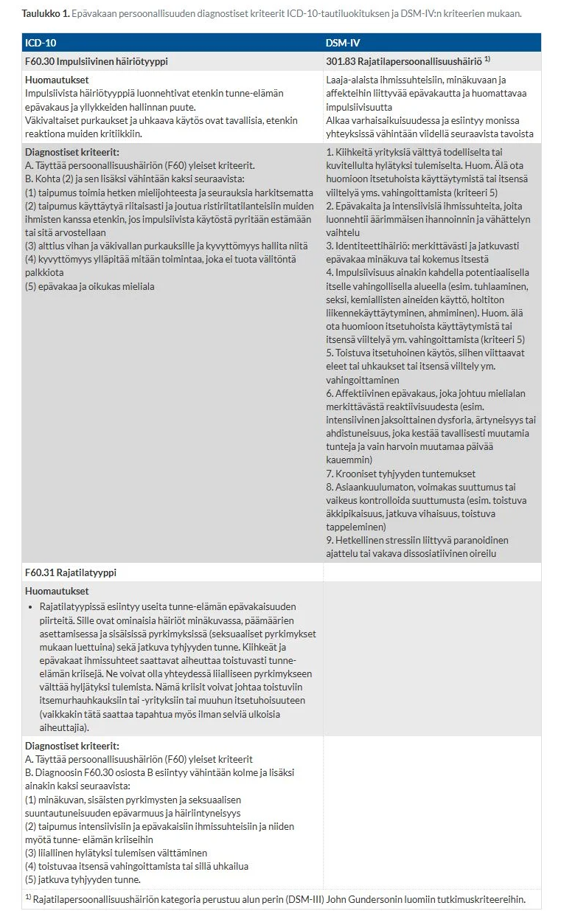
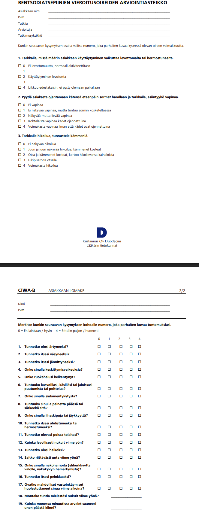

Kappale 13 2015
13.1 1. tentti
Kysymykset eroavat paljon tulevista vuosista ja tässä hyvää harjoitusta näiden aiheiden suhteen.
13.1.1 Epävakaan persoonallisuushäiriön hoito
Epävakaa persoonallisuushäiriö on ehkä se persoonallisuushäiriö, jonka hoidosta on vahvin näyttö. Sen hoito on perinteisesti koettu haastavaksi, mutta nykyään se on yksi parhaiten hoidettavissa olevista persoonallisuushäiriöistä. Suurin osa potilaista (jopa 80 %) toipuu kymmenen vuoden seurannassa niin hyvin, etteivät kriteerit enää täyty.
Hoidon kulmakivi on siirtynyt lääkekeskeisyydestä pitkäjänteiseen, strukturoituun psykososiaaliseen tukeen ja erityisesti psykoterapeuttisiin menetelmiin. Tarvittaessa myös oireenmukainen lääkitys. Lääkehoitoa suunniteltaessa tulee huomioida suurentunut lääkkeillä tehtävän itsemurhan riski ja vähemmän määrätietoisten itsemurhayritysten riski, alttius lääkeriippuvuuteen, päihteiden käyttöön ja omaehtoisuuteen lääkehoidon toteutuksessa sekä potilaan muut sairaudet. Hoitosuhteissa korostuu ammatillisuus ja provosoitumattomuus – vältetään ylihoitamista.
Dialektinen käyttäytymisterapia (DKT) on se psykoterapiamalli, josta on paras näyttö ja on ns. kultainen standardi epävakaan persoonallisuuden hoidossa. DKT:ssa terapeutin asennoituminen ilmentää systemaattisesti käytännön dialektiikkaa, eli ymmärrystä oman ymmärryksen rajallisuudesta ja halua etsiä sitä, mitä ymmärryksestä puuttuu. Tavoite on parantaa psyykkistä joustavuutta. Pyritään vähentämään psykologista jäykkyyttä, lukkiintumista ja polarisoitumista.
DKT:n keskeiset terapiatavoitteet:
Potilaan hoito tulee toteuttaa pääsääntöisesti avohoidossa, mutta häiriöön liittyvät kriisivaiheet voivat edellyttää lyhytkestoista sairaalahoitoa, erityisesti jos potilaalla on itsetuhoista käyttäytymistä tai persoonallisuushäiriöoireiden kanssa samanaikaisia psykoottisia tai vakavia mielialaoireita.
Nopea kertaus oirekuvasta
Epävakaan persoonallisuuden keskeisin oireulottuvuus on tunne-elämän säätelyn voimakas häiriö, johon liittyy tunne-elämän vaihtelu vihaisuuden ja ahdistuneisuuden sekä masennuksen ja ahdistuneisuuden välillä. Kiihkeät ja epävakaat ihmissuhteet saattavat toistuvasti aiheuttaa tunne-elämän kriisejä. Ne voivat olla yhteydessä liialliseen pyrkimykseen välttää hyljätyksi tulemista.
Tyypilliset piirteet ja diagnostiset kriteerit (DSM-5) voi muistaa muistisäännöstä IMPULSIVE:

13.1.2 Päihteistä
- Lääkärin tavat arvioida potilaan suonensisäistä huumenkäyttöä?
- Bensodiatsepiinien tärkeimmät vieroitusoireet ja niiden arviointi
- Alkoholinkäytön riskirajat Suomessa
- Keskeisimmät alkoholin käytön laboratoriomarkkerit
Anamneesi:
Status:
Laboratoriotutkimukset:
Vieroitusoireet muistuttavat alkoholin vieroitusoireita (autonominen ylikierrostila). Vieroitusoireiden vaikeusastetta voidaan arvioida CIWA-B-lomakkeilla.
Vieroitusoireiden kesto on yksilöllinen. Asteittain ne kuitenkin lievittyvät ja lopulta loppuvat. Riittävän hitaasti toteutettu vieroitus pitää vieroitusoireet yleensä hyvin vähäisinä.

Alkoholinkäytön riskitasot jaetaan Suomessa näin annosmäärien (yksi alkoholiannos tarkoittaa 12 g absoluuttista alkoholia eli n. tölkki keskiolutta) mukaan:
Laboratoriokokeet auttavat tunnistamaan suurkulutuksen ja seuraamaan raittiutta.
13.1.3 PTSD: epidemiologia, kliininen kuva ja hoito
Arviolta 35-90% väestöstä kokee elinaikanaan PTSD:n etiologisen kriteerin mukaisen traumaattisen tapahtuma ja arviolta 20-30% trauman kokeneista tulee täyttämään PTSD:n kriteerit. Arvot ovat tietysti paljon suuremmat sodan aikaan kuin rauhan aikaan; tämän takia myös turvapaikanhakijoilla esiintyvyys on suurempaa. PTSD:n vuosittaisen insidenssin arvellaan olevan n. 5/1000 henkilöä.
Traumaperäistä stressihäiriötä (PTSD) luonnehtii keskeisesti se, että potilas ei ole toipunut traumaattisesta järkytyksestään ja sen alkuoireista, vaan järkytysoireyhtymä on pitkittynyt ja “lukkiutunut päälle”. Koska on mahdotonta määritellä, minkälaiset tilanteet eri kulttuureissa ja eri ajankohtina kuuluvat “normaalisti” odotettavissa olevaan kokemuspiiriin, järkyttäviä tapahtumia ei voi tarkasti rajata tai määritellä. Järkytystilanteella tarkoitetaan mitä tahansa tapahtumaa, johon liittyy kuolema, vakava loukkaantuminen tai niiden uhka. Henkilön omaa fyysistä vahingoittumista ei siis välttämättä edellytetä; myös läheltä piti -tilanteet voivat muodostua pitkäaikaisesti traumaattisiksi. On myös mahdollista, että ihminen oli itse tilanteessa ja on sen jälkeen täysin toimintakykyinen.
Traumaperäisen stressihäiriön diagnostiset kriteerit (ICD-10) ovat seuraavat:
A. Henkilöä on kohdannut poikkeuksellisen uhkaava tai katastrofaalinen (lyhyt- tai pitkäaikainen) tapahtuma, joka todennäköisesti aiheuttaisi voimakasta ahdistuneisuutta kenelle tahansa
B. Tapahtumaan liittyen ilmenee jokin seuraavista
- jatkuvia muistikuvia
- hetkellisiä voimakkaita takautumia
- painajaisunia
- ahdistuneisuutta olosuhteissa, jotka muistuttavat koetusta tapahtumasta
C. Henkilö pyrkii välttämään joutumista olosuhteisiin, jotka muistuttavat koetusta tapahtumasta, eikä tällaista välttämistä ollut ennen traumaattista tapahtumaa
D. Vähintään toinen seuraavista: a) Kykenemättömyys muistaa osittain tai kokonaan joitakin keskeisiä asioita traumaattisesta tapahtumasta; b) Jatkuvat psyykkisen herkistymisen ja ylivireyden oireet eli vähintään kaksi seuraavista:
- unettomuus
- ärtymys tai vihanpuuskat
- keskittymisvaikeudet
- lisääntynyt valppaus tai varuillaan oleminen
- liiallinen säpsähtely
E. Oireet ovat kestäneet yli 1kk ja häiriö täyttää kriteerit B, C ja D kuuden kuukauden sisällä traumaattisesta tapahtumasta tai sellaisen ajanjakson päättymisestä.
Diagnostisia kriteereitä ei ehkä ole niinkää tärkeää muistaa täydellisyydessään, mutta tärkeimmät piirteet voi muistaa muistisäännöstä TRAUMA
Komorbiditeetit ovat yleisiä. Jopa 80 % PTSD-potilaista kärsii samanaikaisesti muusta mielenterveyshäiriöstä, kuten masennuksesta, ahdistuneisuushäiriöstä tai päihdeongelmasta (usein itselääkintänä).
PTSD:n hoidon tavoitteena on traumamuiston integroiminen osaksi elämäntarinaa niin, ettei se enää laukaise hallitsematonta hälytystilaa. Ensisijainen hoito on psykoterapia ja lääkehoidolla on tukeva rooli (ensisijaisesti SSRI, varovainen aloitus, hoitovasteen ilmaantumisessa voi kestää pitkään). Alkuvaiheessa bentsodiatsepiinihoito mahdollinen, mutta ei useinkaan tarkoituksenmukainen. Beetasalpaaja ylivireystilan hoitoon. Unihäiriöisillä väsyttävä mielialalääke esim. mirtatsapiini, tratsodoni. Osalla oireyhtymään liittyy niin vakava psyykkisten voimavarojen vähentyminen, että he eivät pysty aktiiviseen psykoterapiaan ennen kuin tilaa on lievitetty lääkehoidon avulla. On erityisen tärkeää kertoa potilaalle lääkehoidon tavoitteista ja perusteista: lääkehoidon tavoitteena ei ole traumaattisen kokemuksen kieltäminen tai sammuttaminen vaan oireiden hallinnan lisääminen psyykkistä työtä varten. Lääkehoidosta voi olla jopa huomattavaa psykologista haittaa, jos henkilö kokee lääkemääräyksen vain lääkärin keinona välttää traumaattisen kokemuksen myötätuntoista kuuntelemista. Hoito toteutetaan pääasiassa ESH. Alla psykososiaalisen hoidon periaatteita:
PTSD:n ennaltaehkäisyssä heti traumatapahtuman jälkeen tai sitä seuraavien vuorokausien aikana toteutettujen interventioiden hyödystä ei ole selvää näyttöä. Jälkipuinnin tulee perustua asianmukaisen tiedon antamiseen ja ihmisen suostumukseen. Siihen ei saisi missään oloissa pakottaa osallistumaan. Jälkipuinti ei korvaa muuta psykososiaalista tukea, aktiivista seurantaa, mielenterveyspalveluja tai muita terveydenhuollon toimintoja.
13.1.4 Somatisaation kolme yleisintä muotoa terveydenhuollossa
Somatisaatio on termi, jolla tarkoitetaan psyykkiseltä pohjalta nousevaa ruumiillista reagointia ja siten ruumiillista sairautta muistuttavien oireiden syntyä. Eli siis tarkoitetaan taipumusta kokea, käsitteellistää ja ilmaista psyykkisiä ristiriitoja ruumiillisina oireina tai muutoksina. Somatisaatiolla voidaan tarkoittaa myös laajemmin kaikkea ja käytännössä kaikilla ihmisillä ainakin joskus ilmenevää toiminnallista oireilua, jota elimellinen patologia ei selitä, tai kuvaamaan sairauden pelkoa. Somatisaatio itsessään ei ole käsitteenä psykiatrinen häiriö eikä myöskään kliininen diagnoosi. Kyse on lähtökohtaisesti tavallisesta ilmiöstä, joka voi liittyä kenen tahansa elämään, kaikkiin psykiatrisiin häiriöihin ja fyysisiin sairauksiin. Somaattisina koetut oireet ovat suurimmalla osalla ihmisiä nopeasti ohimeneviä eivätkä ne johda avun hakemiseen.
Somatisoinnissa voidaan erottaa ainakin kolme käsitteellisesti erilaista tyyppiä:
- Eri elinjärjestelmien ruumiilliset oireet, joille ei löydy orgaanista syytä. Tämän äärimmäinen muoto on somatisaatiohäiriö. Somatisaatiohäiriöstä kärsivä potilas keskittyy oireisiin, ja hän saattaa suhtautua jopa lähes välinpitämättömästi mahdollisen sairauden olemassaoloon.
- Huoli sairaudesta tai omien elintoimintojen seuraaminen siinä mitassa, että se ei ole suhteessa mahdollisiin ruumiillisiin löydöksiin, kuten hypokondriassa. Hypokondriapotilas pelkää jatkuvasti vakavaa sairautta tai uskoo sen olemassaoloon. Hän on nimenomaan peloissaan tietystä sairaudesta, eikä hänen huolensa niinkään kohdistu oireisiin yleensä.
- Psykiatrisen sairauden ilmeneminen pääosin tai kokonaan ruumiillisina oireina, esimerkiksi depressiossa tai ahdistuneisuushäiriöissä.
13.2 Uusinta
Ainoa vuosi wikissä, josta on saatu uusinnan tärpit muistiin.
13.2.1 Riippuvuus
- ICD-10 päihderiippuvuuden kriteerit
- Mitä tarkoittaa positiivinen ja negatiivinen vahvistaminen päihderiippuvuuden synnyssä?
Viralliset päihdehäiriöt ovat joko haitallisen käytön tai riippuvuuden alla. Haitallisessa käytössä päihteen käyttöön liittyy selvästi määriteltävissä olevia fyysisiä tai psyykkisiä haittoja, mutta ei vielä diagnostista riippuvuutta. Riippuvuus on kyseessä, kun seuraavat diagnostiset kriteerit täyttyvät:
Vähintään 3 seuraavista oireista ovat esiintyneet yhtäaikaisesti vähintään kuukauden ajan, tai mikäli yhtämittaiset jaksot ovat kuukautta lyhyempiä, ne on todettu toistuvasti viimeksi kuluneen vuoden aikana
- Toleranssi
- Kontrollin menetys
- Pakonomaisuus/Himo
- Vieroitusoireet
- Ajankäyttö
- Käyttö jatkuu haitoista huolimatta
ICD-11-tautiluokituksessa kriteerit ovat seuraavat:
Käyttöä toistuvasti ≥12kk ajan tai käyttöä päivittäin ≥ 3kk ja 2/3 seuraavista oireita:
- Kontrollin menetys
- Päihdekäytöstä koituva haitta elämässä
- Neuroadaptaatioon liittyvät fysiologiset muutokset: Toleranssin kasvu TAI Vieroitusoireet


Riippuvuuden kehityksen selitysmallissa tärkeitä piirteitä ovat positiivinen ja negatiivinen vahvistaminen. Positiivinen vahvistaminen tarkoittaa, että käyttäytyminen lisääntyy, koska se tuottaa mielihyvää tai palkitsevan kokemuksen. Negatiivinen vahvistus tarkoittaa, että käyttö jatkuu/lisääntyy, koska henkilö yrittää vähentää huonoa tunnetilaansa.
Käytännössä siis päihderiippuvuuden kehittymisen alkuvaiheessa positiivinen vahvistaminen on usein pääroolissa. Päihteen käyttö tuottaa hyvää oloa ja tämä aiheuttaa oppimisprosessin (päihdettä -> hyvä olo -> halua lisää päihdettä). Vaikka dopamiinijärjestelmän aktivaatioon perustuva positiivinen vahvistaminen antaa selitysmallin addiktion kehittymiselle, se ei riitä perustaksi pitkälle edenneelle riippuvuudelle, johon voi liittyä myös negatiivisen vahvistamisen piirteitä
Negatiivinen vahvistaminen on siis pääroolissa riippuvuuden myöhäisvaiheessa, kun henkilö alkaa käyttää päihteitä vieroitusoireiden välttämisen tai niiden lievittämisen takia, ja tarkoituksena on usein myös lievittää negatiivisia affektiivisia tiloja, kuten anhedoniaa, ahdistusta ja masennusta. Päihteiden kroonisen käytön aikana lisääntyvän negatiivisen vahvistamisen perustaan liittyy luultavasti aivojen stressijärjestelmien herkistyminen. Esimerkiksi kortikotropiinin vapauttajahormoni (CRH) säätelee hormonaalisia ja sympaattisia stressivasteita hypotalamuksen paraventrikulaaritumakkeen, aivolisäkkeen ja lisämunuaisten kautta.
Riippuvuuden kolme vaihetta havainnollistavat tätä:
- Intoksikaatio - tyvitumakkeet = sekä dopamiinia että glutamaattia eritetään dorsaaliin striatumiin -> käytöksen positiivinen vahvistaminen ja oppimisprosessi
- Vieroitus - amygdala = Extended amygdalan herkistyminen stressille kortikotropiinia vapauttavan tekijän (CRF) vaikutuksesta aiheuttaa negatiivisen tunnetilan
- Antisipaatio - prefrontaalinen korteksi = Heikentyneet inhibitoriset reitit korteksista aiheuttavat relapsin

13.2.2 Psykiatrinen status
- Pohdi psykiatrisen statuksen merkitystä
- Mihin kiinnität huomiota psykiatrisessa statuksessa ja miksi?
Statushavaintojen perusteella voidaan:
- Kertoo itsestä huolehtimisen ja toimintakyvyn tasosta. Huono hygienia saattaa viitata esimerkiksi masennukseen tai skitsofreniaan.
- Voi kertoa mielentilasta, käyttäytymisongelmista yms.
- Kertoo yleisesti kognitiosta. Jos potilas on sekava, syy on usein somaattinen.
- Välttelevä kontakti voi viitata ahdistukseen tai paranoidisuuteen.
- Puheen nopeus, määrä, loogisuus. Onko puhetulvaa vai viivästynyttä vastaamista?
- Puhetulva viittaa maniaan. Hidastuneisuus masennukseen. Katkonainen tai epälooginen puhe viittaa ajatushäiriöihin (psykoosi)
- Tunneilmaisun laatu; kaventuneet ilmeet ja latteat affektit voivat viitata esimerkiksi masennukseen.
- Kuuleeko tai näkeekö potilas olemattomia? Tarkkaileeko hän ympäristöään poikkeavasti? Keskeistä psykoosien diagnostiikassa.
- Itsetuhoisuus, harhaluulot (vainoharhaisuus, suuruusharhat), pakkoajatukset, onko realiteeteissa. Varsinkin ITSETUHOISUUS on kriittinen kysyä ja arvioida. Määrittää hoidon kiireellisyyden.
- Oman ajattelun, tunteiden ja toiminnan tarkastelu; voi ennustaa esimerkiksi soveltuvuuttaa psykoterapiaan
- Kiihtyneisyys, vapina, jäykkyys, tic-oireet
- Voi olla merkki sairaudesta (esim. manian kiihtyneisyys) tai lääkehoidon haitoista (akatisia, parkinsonismi)
- Ymmärtääkö potilas olevansa sairas ja tarvitsevansa apua? Ennustaa sitoutumista hoitoon.
Esimerkkistatus näiden perusteella:
Asiallinen ja orientoitunut. Siisti habitus. Keskusteluyhteydessä normaalisti, katsekontaktia välttää. Kognitiossa ei merkittävää poikkeavaa, muistissa ei havaittavia puutteita. Puheen tempo hidastunutta, mutta puhe ja kerronta loogista. Affektit ja mimiikka niukkoja. Motorisesti jännittynyt, hieman tuskainen. Reflektiokykyinen ja psykologista joustavuutta esiintyy. Yleisolemus ja mieliala surullinen. Realiteeteissa, joskin käsitys itsestä korostuneen itsekriittinen. Itsetuhoisuutta ajatuksen tasolla, ei kuitenkaan akuuttia itsetuhoisuutta. Hoitomyönteinen ja sairaudentuntoinen.